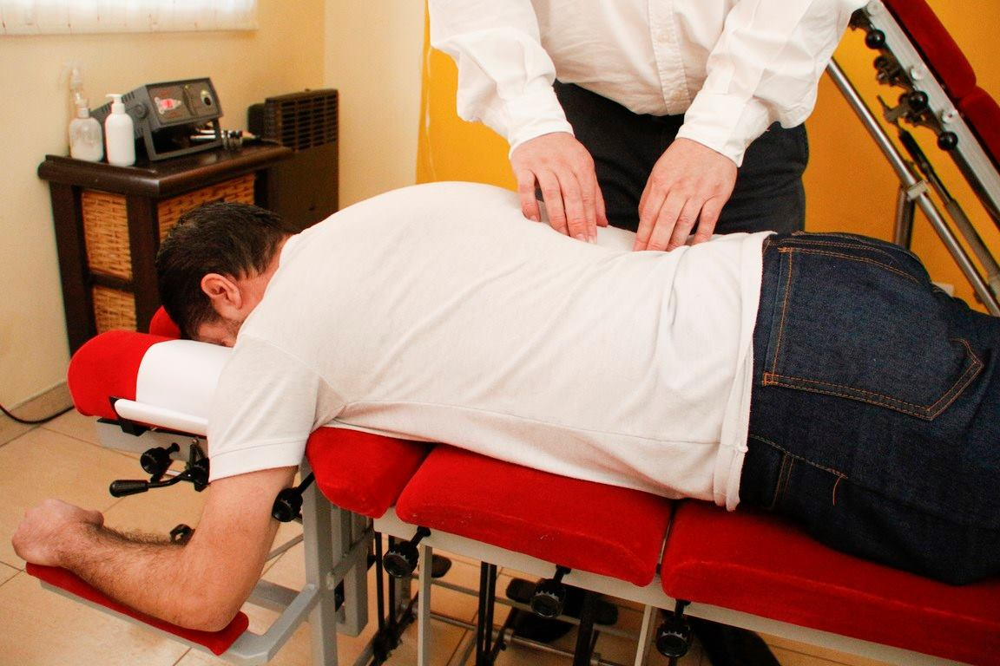

¿Qué es la quiropraxia?
La quiropraxia es un arte natural basada en el cuidado de la columna vertebral libre de cualquier fármaco que mantiene la salud de todo el sistema nervioso. Cuando la columna no se mueve con libertad, hablamos de subluxación, esta se da cuando dos o mas vertebras pierden su motricidad y/o su posición nomal, esto puede causar la interrupción del flujo del sistema nervioso e interferir con la comunicación entre el cuerpo y el cerebro. La degeneración de la columna no tiene que ver con su edad. El origen de la subluxación puede ser por mala postura, jardinería, estrés químico (medicamentos), embarazo, levantar peso incorrectamente, estrés físico y deportes. La quiropráxia ayuda a solucionar estos problemas localizando y ajustando las interferencias en la columna para que el sistema nervioso pueda funcionar al nivel optimo brindándote así, Salud, Bienestar y calidad de vida.
¿Por qué me eligen?

Compromiso Activo
Acompaño a las personas en su decisión de cuidarse desde la conciencia y la intención.

Potencia tu vitalidad
Más energía, movilidad y descanso reparador.

Tratamiento 100% personalizado
Escucho, respeto y estoy presente para cada persona que elige transformar su vida con quiropraxia.

Bienestar integral
Trabajo para alinear no solo la columna, sino también la experiencia física, emocional y mental de cada persona.

¿Quienes me eligen?
Embarazo
Incluyendo la quiropraxia entre otros hábitos de bienestar, puedes crear un entorno óptimo para el bebé.
Niños
El sistema nervioso de un niño esta en constante evolución, creando billones de conexiones neurológicas. Es fundamental que se desarrolle sin interferencias.
Deportistas
El enfoque de la Quiropráctica sobre el sistema nervioso y la biomecánica de la postura permiten al cuerpo funcionar al 100% y curarse a sí mismo.
Tercer Edad
El envejecimiento es un proceso natural. Por ello es tan importante tomar medidas preventivas para frenar o ralentizar los aspectos más desvitalizantes del envejecimiento.